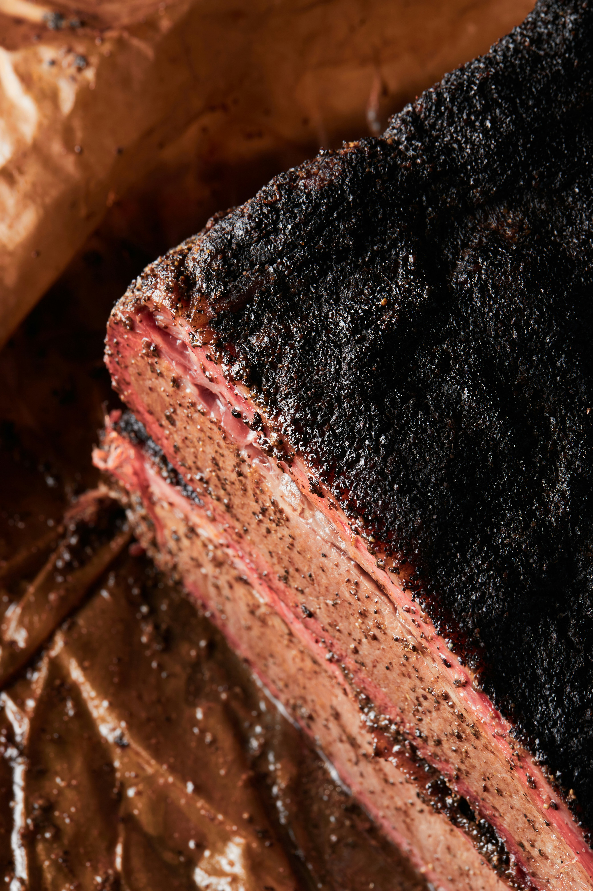

Home
Smoked Beef Brisket

Description
Slow cooker Texas smoked beef brisket is tender, juicy, and deeply
flavorful with a peppery bark, slow-cooked for hours until it shreds
easily, delivering a rich, smoky, authentic barbecue taste.
Ingredients
Brisket Rub:
- 3 tablespoons smoked paprika
- 2 tablespoons ground black pepper
- 2 tablespoons kosher salt
- 1 tablespoon brown sugar
- 1 tablespoon chili powder
- 1 teaspoon ground cumin
- 1 ½ pounds beef brisket
Barbecue Sauce:
- ¾ cup barbeque sauce
- ¼ cup water (Optional)
- 1 tablespoon Worcestershire sauce
- ¼ teaspoon liquid smoke flavoring
- ½ onion, sliced into rings
Steps
- Gather all ingredients.
-
Prepare brisket rub: Mix paprika, pepper, salt, brown sugar, chili
powder, and cumin together in a bowl; rub evenly over brisket. Put
brisket in a large, resealable plastic bag; refrigerate for 30 minutes
to overnight.
-
When ready to cook, prepare barbeque sauce: Stir barbeque sauce, water,
Worcestershire sauce, and liquid smoke together in the bottom of a slow
cooker.
-
Remove brisket from the refrigerator and take out of the bag. Lay
brisket in sauce in the slow cooker and arrange onions over top.
- Cook on Low until brisket is very tender, 6 to 7 hours.
-
Rest brisket 10 minutes before slicing or shredding; serve with sauce
from the slow cooker.